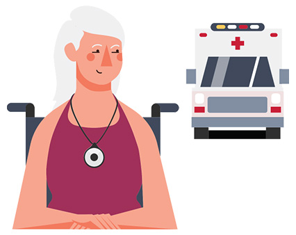

"Help at the push of a Button for your safety"
Comox Valley Lifeline has a medical alert system for every lifestyle, allowing you to enjoy a carefree life. “We're here to support you every step of the way."
Call Today!1-250-338-4255
The Most Trusted Medical Alert System
We understand the importance of safety and independence. For 20+ years, we've been dedicated to providing reliable medical alert systems that offer peace of mind to every individual
Explore our missionOur Commitment
Our non-profit, charitable organization is committed to ensuring quick response with 24/7 and 365 days of available assistance.
Donations
Interested in helping us to meet our goal of providing Lifeline service, please consider making a donation of your own.

How Lifeline Works
Our top-notch home and mobile emergency alert systems guarantee round-the-clock coverage, providing you with peace of mind at all times

Reliable Devices
Easy-to-use device equipped with a wearable button.Our lightweight, waterproof wearable devices powered by the longest lasting batteries available mean you live with confidence.
Immediate Response
Our system instantly connects you to our 24/7 response center. We ensure quick and efficient response time. When you push the button from your device, you will receive instant help by an expert who will get you the help you need- right away.
Rapid Assistance
Help is on the way. Your safety is our #1 concern, and if needed, we'll immediately dispatch emergency personnel to your location. With our alert system, continue to live independently.
Medical Alert System
Lifeline Communicator Units

Lifeline communicator devices are reliable systems designed to offer immediate assistance when needed. These devices connect seamlessly to an active telephone jack and electrical outlet in your home. In emergency situations, whether activated by pressing the wearable button or utilizing your connected phone, prompt access to our 24/7 response center is guaranteed.
Discover Communicator-UnitsPersonal help buttons
The personal help button serves as your immediate lifeline. This wearable device connects seamlessly to our assistance system, offering instant access to our 24/7 response center. By simply pressing this button, help is on the way. It's a direct link to support whenever you need it, providing peace of mind and security in any situation.
Discover Personal-Devices
Get Connected to Lifeline Today
Experience the peace of mind our Lifeline offers by taking the first step towards safety and independence.
Join Us